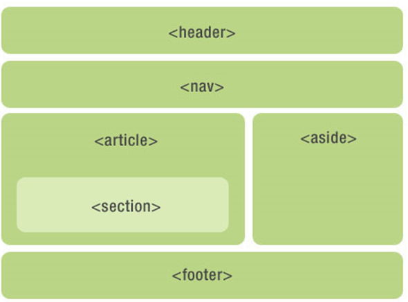

面试的时候，我有时候会问面试者 你对HTML语义化的理解 这样一题。我期待的回答起码包括：什么是语义化 ，为什么要语义化或者语义化有什么作用这样两部分，如果能举一些语义化标签的使用场景就更完美了。对HTML标签语义化的理解和实践，作为我们每个前端攻城狮的一个必备技能和自我要求，好么？
语义化 What + Why
语义化是前端开发里面的一个专用术语，其优点在于标签语义化有助于构架良好的html结构，有利于搜索引擎的建立索引、抓取；另外，亦有利于页面在不同的设备上显示尽可能相同；此外，亦有利于构建清晰的机构，有利于团队的开发、维护。 —— 维基百科
以上，很官方的解释，而且重点在说标签语义化的作用了。
其实，通俗的说，语义化就是用正确的标签做正确的事情，表达正确的意思。浏览器很包容，即使你用非语义的标签，再用CSS披上一层外衣，也可以达到语义标签的效果，但这样真的好么？当然不好！
首先，我们写的代码不是只给你自己看的。通篇DIV标签，你考虑过小伙伴们的感受么？有时候维护别人的代码，比推倒重写更难受，没错，就是难受。一份好的HTML代码，应该是正确嵌套、语义明确、结构清晰、合理缩进加必要的注释。
再者，我们写的代码除了给用户看到最终的效果，也要让机器能更好的识别。 最重要的就是要对搜索引擎友好，尤其做电商类网站，SEO更为重要，好的排名能给网站带来更多流量。另外还有针对有视觉障碍的用户使用的屏幕阅读器，也要考虑到web可访问性Web Accessibility。
如果用对了标签，即使有一天你的网页裸奔了，在没有CCS的情况下，也能以一定的文档格式显示（浏览器对各个标签都有默认的样式），并且是容易阅读的。编写网页代码的时候，要从设计稿（视觉稿or交互稿）中明确语义，是标题就用h1-h6，是段落就用p，是列表就该考虑用ul+li、ol+li或dl+dt+dd…
语义化实战
想要用对标签，先要理解标签：HTML标签大全 。
图标：适合放图标的标签（行内标签且简短）（不考虑兼容性，可以用before | after伪元素）
| 标签 | 描述 |
| :——– | ——– |
| b |定义粗体字 |
| i |定义斜体字 |
| em |定义强调文本 |
| span |定义文档中的节 |
按钮：如果是表单中的按钮，推荐button或input并设置type属性，其他情况也可以用a、b等行内标签模拟按钮
图片：img标签，注意设置alt属性1
<img src="/images/demo.png" alt="demo展示" />
如果图片中包含了重要信息，最好也写到标签里再用样式隐藏掉。比如考拉的商品详情页，商品信息都是图片来展示的，这对seo很不利，应该把图片中重要的信息写到标签里并且隐藏掉，图片不能完全替代网页元素，这也是应该养成的习惯。1
2
3
4
5
6<div>
<img src="/images/goodinfo.png" alt="商品信息" />
<div style="display:none;">
<p>此处展示图片中的信息</p>
</div>
</div>
图片新标签：figure 属于 html5，语义是文档中的插图1
2
3
4<figure>
<p>黄浦江上的的卢浦大桥</p>
<img src="shanghai_lupu_bridge.jpg" />
</figure>
表单：整个结构是个完整的表单语义，要用form标签，登录|注册表单、完善信息表单、消息发送表单等等。1
2
3
4
5
6
7
8
9
10<form action="" method="" class="m-loginfm">
<p>
<label for="account" />
<input type="text" name="account" id="account" />
</p>
<p>
<button type="button">登录</button>
<a href="/register">去注册</a>
</p>
</form>
表格：大型的数据表格用table，一些形似表格非严格意义上的表格可以用别的标签加样式来实现，因为表格本身渲染耗性能，而且结构比较深，样式也不够灵活。比较完整的表格结构：1
2
3
4
5
6
7
8
9
10
11
12
13<table>
<caption>Monthly savings</caption>
<thead>
<tr><th>Month</th><th>Savings</th></tr>
</thead>
<tfoot>
<tr><td>Sum</td><td>$180</td></tr>
</tfoot>
<tbody>
<tr><td>5月</td><td>$120</td></tr>
<tr><td>6月</td><td>$60</td></tr>
</tbody>
</table>
列表：无序列表（ul > li）、有序列表（ol > li）、定义列表（dl > dt + dd），不要嵌套错误
- html5新标签：移动端开发可以大胆用起来，PC端兼容方案：
1 | <!--[if lt IE 9]> |
html5的布局标签
| 标签 | 描述 |
|---|---|
| header | 定义页眉 |
| footer | 定义页脚 |
| section | 定义节 |
| article | 定义文章 |
| aside | 定义页面内容之外的内容 |
| nav | 定义导航链接 |

最后，让HTML语义化镌刻进我们前端开发者的基因里，让书写正确的标签，成为下意识的行为。